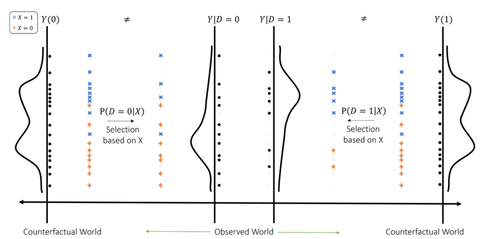
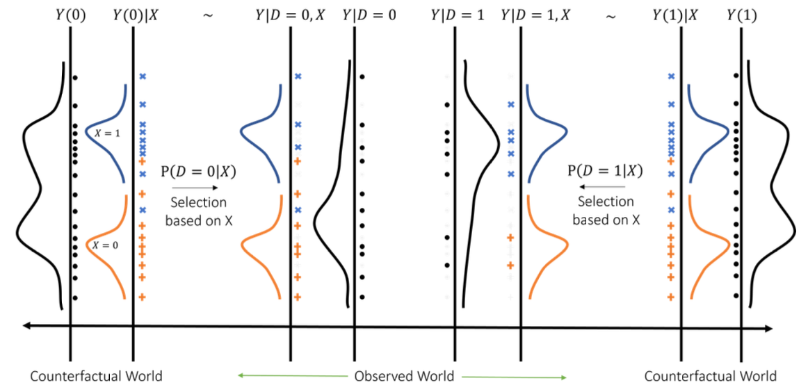

Causality
Introduction and Motivation
What is Causality?
- Causality is about understanding the cause-effect relationships in data.
- It answers what-if questions:
- What would happen if we intervene?
- Would the outcome be different under an alternative scenario?
- Causal reasoning is central to economic analysis.
Causal Questions in Economics
- Do smaller classes improve test scores?
- Does more education lead to higher income?
- Is there gender discrimination in the labor market?
- Causality: Action (Treatment) → Outcome
- Causal effect: the impact on the outcome associated with a ceteris paribus change in the treatment.
- Challenge: Treatment is often related to other factors that also affect the outcome.
What’s the Effect of Hospital on Health?
| Group | Sample Size | Mean Health | Std. Error |
|---|---|---|---|
| Hospital | 7,774 | 3.21 | 0.014 |
| No Hospital | 90,049 | 3.93 | 0.003 |
- Hospital = hospitalized during past 12 months
- Health status = 1 (poor) to 5 (excellent)
Are Hospitals Making People Sicker?
Are Hospitals Making People Sicker?
- Maybe, but people who go to the hospital are likely to be less healthy.
- e.g., pre-existing medical conditions
- A direct comparison is misleading:
- Other factors are not held constant.
- This is the selection problem: the sick are more likely to seek treatment.
Association ≠ Causality
- In the hospital example, differences in health reflect both hospitalization and patients’ underlying health.
- Observed differences may arise from selection, not from the effect of treatment itself.
- In general, statistical analysis uncovers associations in observed data.
- The key question is: When does an association reflect a causal effect?
- To answer that, we need a formal framework for defining and reasoning about causality.
Frameworks for Causality
- Potential Outcomes Framework
- Neyman (1923), Rubin (1974)
- Compare potential outcomes under different treatments
- Structural Causal Models (SCM)
- Pearl (2009)
- Use directed acyclic graphs (DAGs) to model causal paths
- These frameworks are mathematically related — we’ll use both.
Potential Outcomes
Potential Outcomes: One Unit, Two Worlds
- \(Y(1)\): potential outcome if treated
- \(Y(0)\): potential outcome if untreated

The Potential Outcomes Framework
- General setup: \[d \rightarrow Y(d)\]
- SUTVA (Stable Unit Treatment Value Assumption):
- Consistency: \(Y = Y(D)\), where \(D\) is the actual assigned treatment.
- No interference: the potential outcomes for any unit should not be affected by the treatment assigned to other units.
- i.e. no spillover effects.
Does SUTVA Hold?
Treatment: Job training program; Outcome: Individual productivity (units completed per shift)
Scenario 1:
Workers operate independently at personal workstations. Tasks are assigned individually, and there’s no collaboration. However, trained and untrained workers often interact informally during breaks.Scenario 2:
Workers are assigned to 4-person teams operating sequential assembly lines. Each member is fixed to one station (A, B, C, or D) for the entire shift. Output is tracked individually as the number of units completed at each station.Question:
In which scenario(s), if any, would it be reasonable to assume SUTVA holds?
Does SUTVA Hold?
- A worker assigned to training arrives late and misses half the session.
- Question: Can their observed outcome be treated as the potential outcome under treatment?
- A. Yes
- B. No
- A. Yes
Revisiting Hospital and Health
- Outcome of Interest: \(Y\), health status
- Treatment: hospital \[ D = \begin{cases} 1, & \text{if hospitalized} \\ 0, & \text{if not hospitalized} \end{cases} \]
- Define potential outcomes:
- \(Y(1)\): health status if hospitalized
- \(Y(0)\): health status if not hospitalized
- \(Y(1)\): health status if hospitalized
- Observed outcome: \(Y = D \cdot Y(1) + (1 - D) \cdot Y(0)\)
Average Treatment Effect (ATE)
Ideally, we’d like to know the individual causal effect:
\[ Y(1) - Y(0) \]But we can’t observe both potential outcomes for the same person.
So instead, we compute the average treatment effect: \[ \text{ATE} = \mathbb{E}[Y(1) - Y(0)] \]
With certain assumptions, we can estimate ATE from observed data.
What Can Be Estimated?
- Can we estimate the following?
- \(Y(1) - Y(0)\)
- \(\mathbb{E}[Y \mid D=1]\)
- \(\mathbb{E}[Y \mid D=0]\)
- \(\mathbb{E}[Y(1) \mid D=0]\)
- \(\mathbb{E}[Y(0) \mid D=1]\)
- \(\mathbb{E}[Y(1) \mid D=1]\)
- \(\mathbb{E}[Y(0) \mid D=0]\)
- \(Y(1) - Y(0)\)
Decomposing Observed Differences
\[ \mathbb{E}[Y \mid D = 1] - \mathbb{E}[Y \mid D = 0] \] =APE: Average Predictive Effect
\[ = \mathbb{E}[Y(1) \mid D = 1] - \mathbb{E}[Y(0) \mid D = 1] \] = ATT: Average Treatment Effect on the Treated
\[ \quad + \mathbb{E}[Y(0) \mid D = 1] - \mathbb{E}[Y(0) \mid D = 0] \] = Selection Bias
Random Assignment and RCTs
Random Assignment
- If treatment \(D\) is randomly assigned: \[ D \perp (Y(0), Y(1)), \quad 0 < P(D=1) < 1 \]
- Then \[ \mathbb{E}[Y \mid D=1] - \mathbb{E}[Y \mid D=0] = \text{ATE} \]
- Random assignment breaks the link between treatment and potential outcomes — eliminating selection bias.
- Though often infeasible in observational studies, it provides a benchmark for causal inference.
Randomized Controlled Trial (RCT)
- An RCT implements random assignment in practice.
- Subjects are randomly assigned to:
- Treatment group: \(D = 1\)
- Control group: \(D = 0\)
With random assignment: \[ \text{ATE} = \mathbb{E}[Y \mid D=1] - \mathbb{E}[Y \mid D=0] \]
But large samples are crucial:
- By the Law of Large Numbers, idiosyncratic differences average out.
- Ensures treated and control groups are balanced on both observed and unobserved factors.
From Identification to Estimation
- Random assignment identifies the causal effect (ATE) as a difference in observed means across groups.
- But this identification is at the population level.
- In practice, we rely on sample data, so we must estimate the ATE and quantify uncertainty.
- This brings us to statistical inference:
- Estimate population means using sample averages.
- Assess precision using standard errors.
Statistical Inference: Group Means
Suppose we have i.i.d. data from an RCT:
\[ \{(Y_i, D_i)\}_{i=1}^n \]For each group \(d \in \{0, 1\}\), define the population mean: \[ \theta_d = \mathbb{E}[Y \mid D = d] \]
The sample mean is:
\[ \widehat{\theta}_d = \frac{\sum_{i=1}^n Y_i \cdot \mathbf{1}(D_i = d)}{\sum_{i=1}^n \mathbf{1}(D_i = d)} = \frac{1}{n_d} \sum_{i=1}^n Y_i \cdot \mathbf{1}(D_i = d) \]
- Since treatment is randomly assigned: \[ \{Y_i \cdot \mathbf{1}(D_i = d)\}_{i=1}^n \quad \text{are i.i.d. with finite variance} \]
- Then by CLT (conditional on \(D\)), as \(n_d \to \infty\): \[ \sqrt{n_d}(\widehat{\theta}_d - \theta_d) \overset{d}{\longrightarrow} \mathrm{N}(0, \sigma_d^2) \] where \(\sigma_d^2 = \mathrm{Var}(Y \mid D = d)\)
- Under random assignment, \(n_d/n \to P(D = d)\). So we can write: \[ \sqrt{n}(\widehat{\theta}_d - \theta_d) \overset{d}{\longrightarrow} \mathrm{N} \left(0, \frac{\mathrm{Var}(Y \mid D = d)}{P(D = d)} \right) \]
- Moreover, under random assignment, groups are independent: \[ \sqrt{n} \begin{pmatrix} \widehat{\theta}_1 - \theta_1 \\ \widehat{\theta}_0 - \theta_0 \end{pmatrix} \overset{d}{\longrightarrow} \mathrm{N} \left( \begin{pmatrix} 0 \\ 0 \end{pmatrix}, \begin{pmatrix} \frac{\sigma_1^2}{p_1} & 0 \\ 0 & \frac{\sigma_0^2}{p_0} \end{pmatrix} \right) \]
Inference for ATE: Difference in Means
- We want to test: \[ H_0: \theta_1 - \theta_0 = 0 \quad \text{vs} \quad H_1: \theta_1 - \theta_0 \neq 0 \]
- From joint asymptotic normality: \[ \sqrt{n} \left[ (\widehat{\theta}_1 - \widehat{\theta}_0) - (\theta_1 - \theta_0) \right] \overset{d}{\longrightarrow} \mathrm{N}\left(0,\; \frac{\sigma_1^2}{p_1} + \frac{\sigma_0^2}{p_0} \right) \] For \(n\) large, \[(\widehat{\theta}_1 - \widehat{\theta}_0) \;\approx\; \mathrm{N}\left( \theta_1- \theta_0,\;\frac{\sigma_1^2}{n_1} + \frac{\sigma_0^2}{n_0} \right)\]
We estimate the variance using sample analogues: \[ \widehat{\sigma}_d^2 = \frac{1}{n_d - 1} \sum_{i: D_i = d} (Y_i - \widehat{\theta}_d)^2 \]
and construct the standard error: \[ \widehat{\mathrm{SE}}^2 = \frac{\widehat{\sigma}_1^2}{n_1} + \frac{\widehat{\sigma}_0^2}{n_0} \]
- The test statistic is:
\[T = \frac{\widehat{\theta}_1 - \widehat{\theta}_0}{\widehat{\mathrm{SE}}}\;\overset{H_0}{\sim}\; \mathrm{N}(0, 1)\]
Estimating Causal Effect: An RCT Example
Scenario: Evaluating the effect of a new fertilizer on crop yield through a randomized controlled trial (RCT).
- ▶️ Treatment Group: 50 farms use the new fertilizer.
- ▶️ Control Group: 50 farms use the standard fertilizer.
| Group | Sample Size | Mean Yield | Std. Dev. |
|---|---|---|---|
| Treatment | 50 | 1800 kg/ha | 150 kg/ha |
| Control | 50 | 1650 kg/ha | 140 kg/ha |
Estimating Causal Effect: Analysis
- Difference in Means (Treatment Effect):
\[ \text{ATE} = \bar{Y}_T - \bar{Y}_C = 1800 - 1650 = 150 \text{ kg/ha} \]
- Compute the test statistic:
\[ t = \frac{\bar{Y}_T - \bar{Y}_C}{\sqrt{\frac{s_T^2}{n_T} + \frac{s_C^2}{n_C}}} = \frac{150}{\sqrt{\frac{150^2}{50} + \frac{140^2}{50}}} = \frac{150}{29.10} \approx 5.15 \]
Estimating Causal Effect: Inference
- Hypotheses:
- \(H_0\): The fertilizer has no effect (\(\mu_T - \mu_C = 0\)).
- \(H_1\): The fertilizer affects yield (\(\mu_T - \mu_C \ne 0\)).
- Conclusion:
- \(t = 5.15\) is highly significant (critical value at 5% level is 1.96).
- ✅ Reject \(H_0\): The fertilizer increases crop yield by approximately 150 kg/ha.
Covariates and Heterogeneity
Covariates and Heterogeneity
So far, we’ve focused on the average treatment effect (ATE) across the whole sample.
But individuals differ — age, education, baseline health, etc.
- These observable characteristics are often included in analysis as covariates, to explore differences in treatment effects across subgroups.
- This motivates studying treatment effect heterogeneity:
- Who benefits more?
- Are there subgroups where treatment is less effective?
Conditional Effects: CATE
- Conditional Average Treatment Effect (CATE): \[ \mathbb{E}[Y(1) - Y(0) \mid W] \]
- But we never observe both \(Y(1)\) and \(Y(0)\). Instead only observe \[ \mathbb{E}[Y \mid D=1, W] - \mathbb{E}[Y \mid D=0, W] \]
- If treatment is randomly assigned
\[ D \;\perp\!\!\!\perp\; \left( Y(0), Y(1), W \right), \quad \text{with } 0 < P(D = 1) < 1, \]
- Then the Conditional Average Treatment Effect (CATE) is identified: \[ \mathbb{E}[Y(1) - Y(0) \mid W] = \mathbb{E}[Y \mid D = 1, W] - \mathbb{E}[Y \mid D = 0, W] \]
Testing Covariate Balance
- The random assignment assumption implies covariate balance, i.e. the distribution of covariates is the same across treatment and control groups: \[ W \mid D = 1 \;\overset{d}{=}\; W \mid D = 0 \]
and equivalently, \[ D \mid W \;\overset{d}{=}\; D \]
A useful implication is that \(D\) is not predictable by \(W\): \[ \mathbb{E}[D \mid W] = \mathbb{E}[D] \]
which can be tested using a regression of \(D\) on \(W\).
Causal Diagrams and RCT Limits
Drawing RCTs via Causal Diagrams
- Causal diagrams (DAGs) provide a graphical language for representing causal relationships.
- Nodes represent variables; directed edges represent direct causal effects.
- DAGs help us reason about identification, confounding, and when causal effects can be estimated from data.
- In a randomized experiment, treatment ( D ) is assigned independently of all covariates — so \(W \not \! \rightarrow D\).
Limitations of RCTs
- Violations of SUTVA:
- Spillover effects — e.g. vaccination may protect others via herd immunity.
- Equilibrium effects — e.g. the earnings return to college may depend on how many people get degrees:
- In small-scale trials: no effect on market wages.
- At scale: wages may adjust, reducing the college premium.
- Ethical concerns:
- Some treatments cannot be randomly assigned — e.g. smoking, pollution, trauma.
- Practical constraints:
- RCTs can be costly, time-consuming, or infeasible in many settings.
Observational Studies
When Treatment Isn’t Random
In observational studies, treatment is often influenced by factors that also affect the outcome.
Do hospitals improve health?
We observe health outcomes and hospitalization status —
but sicker individuals are more likely to be hospitalized.This makes it hard to separate the effect of hospitalization from the effect of underlying medical condition.
Identification by Conditioning
Recovering Causality
To recover causal effects from observational data, we rely on two key assumptions:
1. Conditional Ignorability (Unconfoundedness)
\[ D \perp Y(d) \mid X \]
Once we condition on covariates \(X\), treatment is “as if” randomly assigned.
This rules out confounding by observed variables.
2. Overlap (Common Support)
\[ 0 < P(D = 1 \mid X) < 1 \]
For every covariate profile, we observe both treated and untreated individuals.
Identification by Conditioning
Before Conditioning

After Conditioning on Covariates

What the Assumptions Let Us Do
- Under Conditional Ignorability and Overlap, we can identify causal effects using observed data.
- Specifically, we can equate observed and counterfactual conditional expectations: \[ \mathbb{E}[Y \mid D = d, X] = \mathbb{E}[Y(d) \mid X] \]
- So the difference in observed outcomes conditional on \(X\): \[ \pi(X) = \mathbb{E}[Y \mid D = 1, X] - \mathbb{E}[Y \mid D = 0, X] \] equals the Conditional Average Treatment Effect (CATE): \[ \delta(X) = \mathbb{E}[Y(1) \mid X] - \mathbb{E}[Y(0) \mid X] \]
- Averaging over ( X ), we recover the ATE: \[ \mathbb{E}[\delta(X)] = \mathbb{E}[\pi(X)] = \text{ATE} \]
Course Roadmap
What’s Next?
Course Roadmap: Steps in Empirical Analysis
- Question: Define the research question or problem.
- Econometric Model: Specify the model for data analysis.
- Formulate a Hypothesis: Develop a testable hypothesis of interest.
- Estimate the Model with Data: Use econometric methods to estimate model parameters.
- Inference/Hypothesis Testing: Perform statistical tests for making inferences about the population.
Econometric Model: Linear Regression
Why is regression essential?
- Despite its simplicity, it is highly versatile and widely used in empirical analysis.
- Bridges theory and evidence, allowing us to test hypotheses and validate economic models.
- Provides insights into both causal relationships and predictive patterns.
Linear regression is used for:
- Causality: Estimating the average treatment effect.
- Prediction: Forecasting outcomes based on observables.